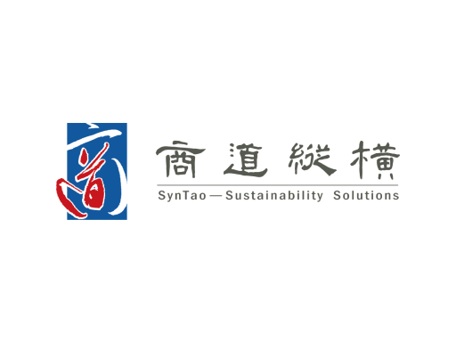

01

SynTao
Consulting Intern
Mar–Jul 2025 · Beijing
- Developed ESG report chapters for four companies across manufacturing, ICT and renewable energy.
- Researched information security and technology ethics, benchmarking governance at five technology companies.
- Built an ESG/CSR awards calendar from hundreds of sources to support team planning.